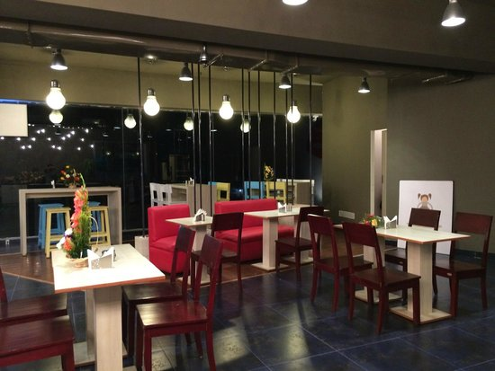

Om Shanthi
Open: from 7:00 AM to 11:00 PM
Address: No. 73/1 Guest House Road Nazarbad, Mysuru (Mysore) 570010 India
Book Table Read More View MapKamat Restaurant
Open: from 7:00 AM to 11:00 PM
Address: 1 New Bannimantap Extension Bannimantap, Mysuru (Mysore) 570015 India
Book Table More Details View MapGreen Leaf Food Court
Open: from 7:00 AM to 10:30 PM
Address: 2813 Kalidasa Road VV Mohalla, Mysuru (Mysore) 570002 India
Book Table More Details View MapNon-vegetarian restaurants in Mysuru
Tiger Trail
Open: from 7:00 AM to 11:00 PM
Address: 5, J.L.B Road Royal Orchard Hotel, Mysuru (Mysore) 570001 India
Book Table More Details View Map

Pakva
Open: from 7:00 AM to 10:30 PM
Address: Temple Road No. 10, 2nd Floor, Livin Corner, Above Woodland Showroom, Vani Vilas Mohalla, Mysuru (Mysore) 570002 India
Book Table More Details View Map
Halle Mane Non Veg
Open: from 7:00 AM to 11:00 PM
Address: 7/4 5th Main New Court Road, Mysuru (Mysore) India
Book Table More Details View Map